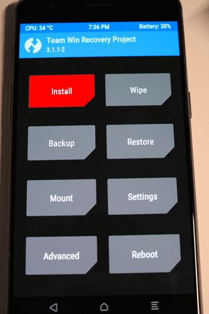
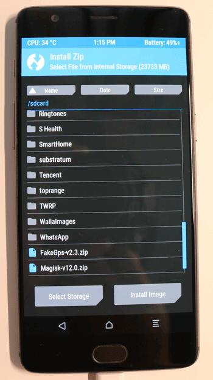
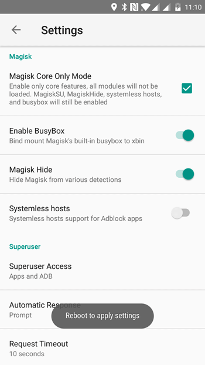

Fake GPS ya funciona con el parche de seguridad de Android de marzo 2017 en android 6.0.1 y superior, el único requisito es mover la aplicación a /system/priv-app y activar modo root en los ajustes de Fake GPS. Esta guía intentara mostrar los pasos a seguir algunos pueden variar dependiendo del modelo de teléfono.
Pasos a seguir:
- Descargar Team Win Recovery Project (TWRP) desde la pagina oficial https://twrp.me/Devices/ , buscamos mediante el modelo de teléfono. La instalación de TWRP dependerá del modelo de teléfono, con una rápida búsqueda en google puede obtener una guía para la mayoría de teléfonos, el siguiente video muestra como instalar TWRP en un Samsung Galaxy S7|S7 Edge.
- Mediante TWRP vamos a instalar Magisk y Fake Gps, descargar los dos archivos y copiar a la memoria del teléfono.
- Luego de reiniciar instalamos Magisk Manager, desde los ajustes de Magisk Manager habilitamos “Habilitar BusyBox” y “Magisk Hide” para la detección, incluyendo SafetyNet, que se utiliza en Android Play, Pokemon GO, Mario Run, etc.
- Ahora ya podemos utilizar Fake GPS para saltar el parche de seguridad de Android y evitar que las app o juegos detecten suplantación de GPS.
Descargar Magisk.zip
Descargar FakeGps.zip



Descargar Magisk Manager

